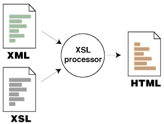

|
| ||
|
| ||
David Turner & Will Friedman
David Turner
Will Friedman
Microsoft Corporation
March 8, 1999
The following article was originally published in the Site Builder Network Magazine.
The Extensible Markup Language (XML) engine familiar to Internet Explorer 4.0 developers has been substantially enhanced in Internet Explorer 5, and fully supports the World Wide Web Consortium (W3C) XML 1.0  and Namespaces in XML
and Namespaces in XML  recommendations. The Microsoft XML implementation also includes full support for the W3C-recommended XML Document Object Model (DOM)
recommendations. The Microsoft XML implementation also includes full support for the W3C-recommended XML Document Object Model (DOM)  , which is accessible from script, the Visual Basic® development system, C++, and other languages. The DOM is a standard object application programming interface that gives developers programmatic control of XML document content, structure, formats, and more. For additional information, see the XML DOM Reference.
, which is accessible from script, the Visual Basic® development system, C++, and other languages. The DOM is a standard object application programming interface that gives developers programmatic control of XML document content, structure, formats, and more. For additional information, see the XML DOM Reference.
In addition, Microsoft Internet Explorer 5 lets users view and navigate XML using Extensible Stylesheet Language (XSL) or cascading style sheets (CSS), just as they view HTML documents.
Users can add XML files to their Favorites folder and can inspect XML files in the History list.
Microsoft's XSL processor, which is based on the latest W3C XSL Working Draft  , allows developers to apply style sheets to XML data, and to display the data in a dynamic and flexible way. This allows true separation of content and display, so that developers and authors can avoid using large amounts of client-side script to navigate the XML tree. More important, it allows them to use the same XML document for many different applications simply by applying a different style sheet. For example, using the same XML data, a company could display their information in a browser with one style sheet and, using the same XML document, display the information on a palm-top device simply by changing the style sheet.
, allows developers to apply style sheets to XML data, and to display the data in a dynamic and flexible way. This allows true separation of content and display, so that developers and authors can avoid using large amounts of client-side script to navigate the XML tree. More important, it allows them to use the same XML document for many different applications simply by applying a different style sheet. For example, using the same XML data, a company could display their information in a browser with one style sheet and, using the same XML document, display the information on a palm-top device simply by changing the style sheet.

Developers may use Microsoft's XSL processor in two ways:
Finally, XML data islands can be embedded in an HTML page, where they can be accessed via script or bound to HTML elements using Internet Explorer's native data binding capabilities. Developers or authors simply need to include the <XML> tag in their Web page. They can do this in one of two ways:
<xml id="MyId" src="http://myxml.xml"> </xml>
<xml id="MyId">
<book>
<title>Zen and the Art
of Motorcycle Maintenance</title>
<author>Robert Pirsig</author>
<category>Philosophy</category>
</book>
</xml>
After indicating the source of the XML data, whether external or in the page, you have programmatic access to every element of the XML data through the object model.
Note: The <XML> tag is reserved by the W3C for use in HTML. For more information please go to http://www.w3.org/  .
.
A tutorial for all these topics can be found at http://msdn.microsoft.com/xml/tutorial/default.asp.
Internet Explorer 5 gives you much more control over printing. You can now open the Print dialog box from a Web page by simply using the window.print() function. In addition, you can modify the layout of the page before or after the printing is done to ensure that your page is properly laid out for the printer. See Scripting Support for Web Page Printing for more details.
DHTML behaviors provide an easy way to drop pre-built functionality into your Web pages using simple CSS syntax. Microsoft and other major Web sites have already built components (e.g., calendars, coolbars, and so forth) that you can put into your Web page. You may be thinking, "These sound like ActiveX® controls!" The difference between DHTML behaviors and ActiveX controls is that behaviors are typically built with HTML components (HTC files) rather than with complicated C++ or Java code. This means that the normal security model for Web pages applies to DHTML behaviors, so there are no security dialogs to accept before the user can see your page. To learn more about DHTML Behaviors, check out the DHTML Behavior Reference.
Internet Explorer 5 conditional comments make it easy to write code that is ignored by older browsers. This allows you to take advantage of new Internet Explorer 5 features while degrading gracefully in other browsers.
<!--[if IE 5]> Welcome to Internet Explorer 5 <![endif]--> <![if ! IE 5]> Non-IE 5 content goes here <![endif]>
It's super-easy to get cool mouseover effects on all the links on a page. Just add the following CSS code, which will benefit users of Internet Explorer 4.0 and higher, and Navigator 4.5, but won't hurt anyone else.
<STYLE>
<!--
a {color:blue;}
a:visited {color:purple;}
a:hover {color:red;}
-->
</STYLE>
You can use script encoding to protect your script so others can't read it. Here's an example of encoded script:
h@#@&dio!Vsgls+',sb./D1C:P'~rPJ, 'Pdl/DHC:@#@&d3x[~hDGw.YH@#@&7hDW2nMYzPdnDP/M+9kY dksrY,`~/,#@#@&idk6~/,@*',T~Y4+
This feature is best used in Internet Explorer 5-only applications, since older browsers don't support script encoding.
There are other DHTML improvements in Internet Explorer 5 that are too numerous to talk about here -- but be sure to check them out.
Check out Getting Ready for Internet Explorer 5: Tips for Web Site Authors to read more about what is coming in Internet Explorer 5.
David Turner is the Technical Evangelist for XML.
Will Friedman is the Strategic Partner Liaison for Internet Explorer 5, and works with top Web sites to educate them on the features and opportunities coming in Internet Explorer 5. In his spare time, he is learning how to play the blues.
Did you find this material useful? Gripes? Compliments? Suggestions for other articles? Write us!
© 1999 Microsoft Corporation. All rights reserved. Terms of use.